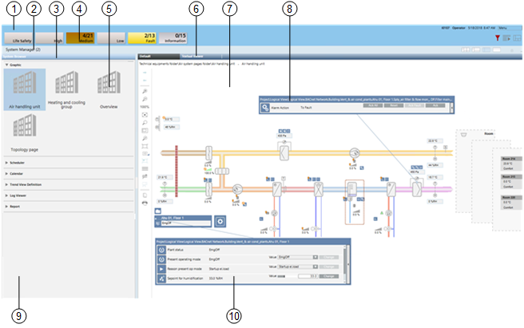

BA Lite User Interface
The exact screen layout will vary depending on your particular configuration, and you may not see all the components described. In particular, the Graphics display and its operation are dependent on the selected function of the automation station.

| Name | Description |
1 | Summary bar | The main point of entry to all the functions of the software. It can be collapsed and you must click the downicon |
2 | System Manager | The System Manager is built to allow for a common workflow for all system navigation and allows users to select from traditional applications or, for a more specific focus, select the part of the facility they are interested in, and let the system guide them to the most relevant information. |
3 | System Browser | System Browser displays applications and objects in the building control system. |
4 | Event Summary bar | The events that occur in the building automation and control system are grouped into categories, which are color-coded by severity. Each alarm category typically corresponds to an event lamp. |
5 | Selection | Depending on the application, Graphics pages, the Scheduler calendar or Reports are displayed and can be selected and operated from the work area. |
6 | Textual Viewer | The Textual Viewer provides a quick summary of the current value and status of any selected objects without any prior system configuration. |
7 | Work area | Displays the selected application for further operation. |
8 | Event indication | If an event occurs, the Status and Commands window displays next to the object. The event can be acknowledged and / or reset here. |
9 | Application selection | Allows you to select the available objects under each application for further operation. |
10 | Operating | Plants, partial plants or set values can be changed in the Status and Commands window. |
 on the top right to display it.
on the top right to display it.